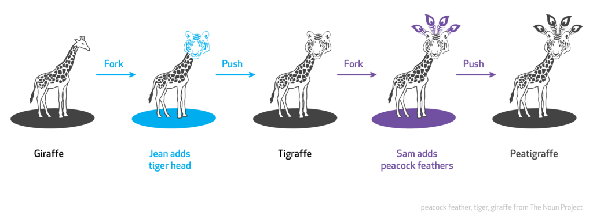

【翻译】30多个短小而又专业的最佳安卓开发者建议

一、原文
文章是我在自己的 Feedly 订阅上看到的，两个地方有原文的发布（新版和旧版）：
30+ Bite-Sized Pro Tips to Become a Better Android Developer
https://techbeacon.com/how-become-better-android-developer-30-bite-sized-pro-tips
小建议大用处！建议有能力的朋友优先阅读原版，翻译有不当之处请海涵哈！ :grin:
二、译文
标题： 30 多个为成为一名更好的安卓开发者的短小而又专业的建议
成为一名安卓开发者很容易，但是要成为一名成功的、突出的安卓开发者却不那么容易。这需要付出很多的努力，耐心，奉献和毅力才能做到。
我并没有什么捷径或者简单的方法来告诉你让你成为一名成功的开发者。但是如果你愿意身心投入且付出努力的话，你肯定会得到应得的成功的。
应大家的请求为成为一名更优秀的安卓开发者，这里有一些从我的经验中吸收的小巧而专业的小窍门来助你一臂之力。所以，如果你决定从事安卓开发或者已经是一名安卓开发者的话，那么你算是找对地方了。
好了，不需要再浪费口舌了，让我们开始吧。
1. 进一步熟悉安卓内部框架
我并不是告诉你怎样去熟悉文档，我指的是实实在在的安卓框架的源码。我见过很多开发者很害怕查看或者深入安卓框架的内部，探索其实际工作原理和不同的模块之间是如何正确地一起运作。
如果你需要提升你的安卓技能，那么请克服对安卓 SDK 内部工作机制的恐惧感，并开始和它成为好朋友吧。
2. 尝试克服对未知的害怕（ FoMo ）
安卓系统很大，非常大。你不可能在一两个月内完全掌握它。随着学习越深入，你会发现越多的内容需要学习。作为一名初学者，很容易也很正常地会出现这种对未知恐惧的害怕。
但是尝试去克服它把。学习那些你确实需要用到的东西，能够让你开始手头正在构建的应用，然后慢慢地开拓你的视野。
3. 开始阅读更多的代码
大部分的开发者不会抽时间阅读其他开发者所写的代码。他们大部分时间只是花在写他们已经知道了的事情上。
但是那并不利于你成长为一名优秀的开发者。也不会增长你的见识。你应该从现在开始看一些开源的应用和类库并开始学习它们。每天 30 分钟的代码阅读量是个非常好的开始。你将会惊讶的发现：还有如此多的东西是你没见过的。
小贴士：这里有一些最好的开源应用程序助你起航
https://blog.aritraroy.in/20-awesome-open-source-android-apps-to-boost-your-development-skills-b62832cf0fa4
4. 考虑学习更多的语言
我并不是要你去学习西班牙语或者中文，而是学习新的编程语言。随着科技的发展，你需要保持自己的知识更新，而不是把自己固定死在安卓一个方面。
这能够开阔你的视野，并能够显著地提升你的安卓开发技巧。下定决心每年至少学习一门新的编程语言吧。但是，请不要在仅仅一周的尝试后就跳过这门语言而放弃学习。尝试着深入这门语言并弄懂它内部的工作原理。
小贴士：看看这篇神奇的文章，来帮助你做一个更好的选择。（剧透 —— 答案是 JavaScript ）
5. 是时候学习 Java 设计模式了
在长远看来，我并不能完全阐明这会对你的安卓开发生涯有多大的影响。任何时刻，你被卡在需要解决的某个严重的程序问题的时候，设计模式着实能帮助你构建一个优雅的解决方案。
你也需要保持和其他程序员一致的节奏，因此他们在谈论关于使用工厂模式或者装饰着模式或者外观模式的时候，你也能够立马懂得他们所指的含义。
给自己定下目标每周学习一个新的设计模式吧。
小贴士：这里有一个极好的资源可以作为你的开始。如果你钟情于书籍，那么你肯定会读一读这个。

6. 开始贡献开源库
如果你已经开发出了一些很有用的东西，并在你自己的应用开发中使用到了，那么考虑开源它吧。在这个过程中有许多的东西是需要你学习的，而且这有助于你成长为一名优秀的开发者。
如果你没有可以开源的项目，考虑浏览其它你所感兴趣的开源项目，并尝试修复一些 bug ，改进其文档注释或者写一些测试等。
即使是最小的贡献量，它仍然对项目维护者保持项目的运作有所帮助。
小贴士：这里有一些良好的指导能够让你开始贡献开源项目。
7. 让你的 IDE 更好地为你工作
准备花更多的时间来了解你所使用的 IDE —— Android Studio 。它所能做的事情比你想象的更多。许多的酷炫特性和快捷方式隐藏着而不为人知，以至于大部分开发者都不了解甚至从来没有尝试探索使用它们。
养成一个探索开发新的、更佳的方式的习惯，让你的工具更好地为你工作，这样能够有效提升你的工作流程和工作效率。
小贴士：这里有一篇很棒的文章能帮助你像专业人士一样掌握 Android Studio 。
8. 是时候正确地架构你的应用了
大部分时间里我们都以放置所有代码到一个活动或者碎片里而结束（你也可以因此怪罪我吧），最终让导致他们成了巨神对象而变得很难维护和测试。
让你的应用适配一个好的架构是非常重要的，像 MVP ， MVVM ， Redux 框架等等。考虑解耦你的应用程序的业务逻辑，交互界面，以及数据结构到不同的层级里，使得他们能够更容易的被管理和测试。
小贴士：看看这些有用的谷歌蓝图能够让你的安卓应用框架更加容易。
9. 学习安卓致简代码指南
你不能忽视了这个。和那些写不出整洁代码的开发者合作会变得很难，至少需要符合安卓开发代码指南。
这根本不是什么高深的技术，而且也不会花费你超过几个小时的时间来学习大部分的 Java 和安卓代码指南基础。这不应该是一次性的学习，而应该是作为开发者的一种习惯上的改变。
小贴士：这里有一篇精彩的资源作为你开始学习标准代码的指南
10. 花一些时间来学习安卓最佳实践
要使自己比其他开发者更加出众，并能构建出整洁美观而又功能完善的应用，你需要开始学习一些安卓开发最佳实践。
这里有一些该做和不该做的条例，能助你成为一名更优秀的开发者，并能让你的应用从其他应用程序中脱颖而出。
小贴士：这里有一个最佳实践文章可以让你做出更好的应用
11. 通过接听电台来充分地高效地利用你的业余时间
尝试高效合理地利用你的业余时间。这些时间属于你从家到办公室或者离开，在健身房锻炼，开车，烹饪的时间等等。而这个时候你那聪明的大脑却处于无事可做的状态。
你可以充分利用这些时间来听一些安卓广播资源。经常性地保持你的大脑尽可能高效地使用这些有用的信息，并努力做到大部分空闲时间的最大利用化。
小贴士：碎片广播和安卓开发者后台是两个让你开始行动的超酷资源广播电台。
12. 不要过于工程化，现实点。
这不仅仅发生在我自己身上，同时我也在一些和我工作的其他开发者伙伴身上也看到了。在开始进行之前就考虑周全是很不错（是非很好），但是过于考虑和过于分析事情会导致最终一事无成，就如同不必要的迷茫，延误和焦虑。
立刻开始行动做那些项目中正确的部分，这样你总是能够适应在之后需要做出改变的规则。
推荐阅读
https://blog.aritraroy.in/what-my-2-years-of-android-development-have-taught-me-the-hard-way-52b495ba5c51
13. 尝试着学习平面设计
我能理解作为一名程序员，你所主要的重心点在于学习编写更好的代码，这是显而易见的。但是如果你要成为一名完完全全的开发者，你应该开始每天花一些时间来学习并理解关于 UI 和 UX 的设计。
这将会颠覆你对待你自己一直正在使用代码编写应用的看法。尝试着和你团队中的 UI 以及 UX 设计师做更多的沟通和交流的机会，你将会更加深入地了解应用设计。
小贴士：读一读这本书如果你对理解设计如何工作的原理感兴趣的话
14. 开始成为一名完美主义者
这是一个类似：我所谓的“完美主义”并非其他人的“完美主义”的话题。但是作为一个小的建议，始终尝试着帮你所需要发布的版本的产品做到尽可能最好。
不要妥协。不要为了单纯的做事而做事。要对你自己的工作有激情并尝试做得比他人更好。这会让你持续成长并在长远看来会让你成为一名更加成功的开发者。
15. 坚持是成功的关键
如果你想成为一名成功的安卓开发者（或者你生命中其他想要的），那么你需要坚持。
做事情坚持不了几天或者几周就放弃那并不会让你学到什么东西。尝试着描绘一下作为一名安卓开发者在未来几年里你所想要成为的人的模样，坚持并不断挑战自我，最终实现自己的目标。
开始一件事很容易，但是保持同样的激情和奉献精神，长时间坚持下去却很难（非常的难）。
16. 积少成多，逐步深入
作为一名开发者，你应该时常试着把你所遇到的任何复杂的问题或者特性，转化成小型的、简单的和独立的组件，这样做能够很容易地被理解并能快速地解决问题。
不要被一个项目的大小和复杂度所压倒。只要你使用正确的方式，任何问题都能够迎刃而解。从小的部分开始，慢慢积累并逐步扩张。
17. 保持手里有项目的另一个测试版本
经常有一个后台的测试版本项目能够完全改变你学习东西的方式。如果你在安卓开发界遇到什么新的事物，请养成一个立刻就开始新建一个后台测试项目的习惯。
假设你在某个地方发现了一个很有趣的安卓代码库，你应该立刻想到新建一个后台测试项目来使用这个库，而不是仅仅快速地浏览一下它的文档和 API 。这会让你更加熟悉、更加深入地了解这个类库。
18. 开始写一些测试
我没法再强调这个有多重要了。你并不能完全吃透某个特性，除非你用尽心思给它写测试。测试能帮助你的代码构建出一个信心彼岸。
不要犯那种忽略测试或者认为测试只是一个“可选项”的错误了，这会让你的生活更加痛苦并增加许多的问题。记住，一个没有测试的代码很容易立刻变成旧地遗留代码。
推荐阅读
https://blog.aritraroy.in/50-ultimate-resources-to-master-android-development-15165d6bc376
19. 考虑适配 TDD
当你在开发一个应用的时候，考虑选择一种机械地而又高效的方式，以便能够顺利地通过测试。
开始遵守 TDD 的“红-绿-重构”周期模式。首先，你所编写的测试可能会失败（红），然后写一些有效的代码让这个测试通过（绿），接着进一步优化并清理整洁这些代码（重构）。
测试驱动型开发是一种编程期间控制自我焦虑的方式。焦虑感会让你变得很具有试探性。焦虑感让你变得不容易沟通。焦虑感会让你害怕发出反馈。焦虑感让你变得心浮气躁。—— 来自 TDD 的案例
20. 设立一个合适的自动发布机制
作为一名开发者，尝试着让自己不要操心那些可以自动完成的东西，比如应用程序质量的测试和发布。
你应该使用那些自动检测程序质量的工具，像 CheckStyle ， PMD ， Lint ， FindBugs 。在合并主要的改变之前运行所有的单元测试和真机测试是必须要做到的。
当所有这些测试通过后，你就会得到一个允许 APK 发布到 Play 商店或者分发到其他你想要的地方的（比如 Crashlytics Beta ）的绿色信号。
小贴士：考虑 Play 商店自动发布机制以及使用这些工具。
21. 拥抱 Reactive 编程的到来
如果你作为安卓开发者想要提升自己的技能，你绝对应该考虑拥抱 reactive 的实现。这会迫使你在构建应用的时候采用完全不同的方式思考问题。
采取 reactive 的方式肯定能够有助于你更加快速地写出交互式应用，并且能够让你的开发更加容易且有趣。
小贴士：这里是一个非常好的学习 RxJava 在安卓应用开发的精彩系列。
22. 学会使用 Kotlin 进行安卓开发
Kotlin 是目前最受欢迎和热议的语言，自从它来到安卓开发界后。它现在也是开发安卓应用的官方支持的语言。这个简洁高效的语言给安卓开发界带来了一丝新鲜的空气。
对于那些被古老、繁琐以及易出错的 Java 所困扰的人们来说，这是发生在安卓开发者身上最大的一件幸事之一。尝试着使用它，你将会重新燃起对你的开发生活的热爱。
小贴士：了解更多关于更好的安卓应用开发你需要开始学习并使用 Kotlin 的原因 。
https://blog.aritraroy.in/why-you-should-start-using-kotlin-to-supercharge-your-android-development-in-2017-61db1f11d666
23. 参加聚会并和更多的开发者建立社交关系
我们开发者趋向于内向，喜欢坐在一个角落里，和自己的电脑组成一个自我的世界。
但是请走出你自己的舒适区，和其他开发者发生更多的联系和沟通吧。当你参加开发者会议，社交活动以及和其他有着和你共同兴趣爱好的开发者一起谈论问题的时候，你会学习到很多很多的东西。
小贴士：这里是一个发现你所感兴趣会谈沙龙的好地方。
24. 熟悉使用键盘快捷键
试着养成一个尽可能不使用你的鼠标的习惯。在 Android Studio 上几乎所有的操作都可以由快捷方式完成。
这会显著地减少你的开发时间并提升你的工作流程。记住一些键盘快捷键可能会在初始阶段花上一些时间，但是从长远时间来看，它会有助于你进入一个真正无鼠标的工作流程状态。
小贴士：如果你用古老的方式不能记住快捷键，这里有一个超棒的 AS 插件来帮你搞定。
25. 尝试着至少每周学会一个安卓相关的知识
在安卓大千世界里，当你在一开始踏入的时候，有太多需要学习和了解的东西会让你感觉猝不及防。但是如果你给自己下定决心，每周学习一个安卓相关的知识点，那么事情会变得更加容易。
做一个列表记下所有你不会的东西，给他们标上先后顺序和重要性，在接下来每周里开始学习，并一步一步地完成它们。那么在几个月后，你会发现你已经远远不是那个刚开始的自己了。
26. 把所有浪费你时间的事情自动化
我们作为工程师，生来就喜欢偷懒，总是想着找到一种简便的方式来完成一份烦人的工作。
所以，如果你在一天里需要做一些重复且厌烦的事情的时候，尝试着考虑把它自动化吧。这会累计让你每周都节约不少时间，从而可以用来花在做其他高效率以及有用的事情上，并能够减少你的焦虑感。
小贴士：看一下这个神奇的工具，它能帮你连接并自动化你每天所使用的工具之间的沟通。
27. 考虑同时运行两个不同版本的 Android Studio
保持使用一个稳定版本的 Android Studio 用来做你每天需要做的那些很重要的事情。但是也同时考虑保持安装使用一个最新候选版本的 Android Studio 。
有时候早期版本中会有很多令人兴奋的新特性，那都是你很乐意去尽可能尝试使用的。
推荐阅读
https://blog.aritraroy.in/30-kickass-tools-to-develop-android-apps-like-a-pro-191e52b9419b
28. 仔细审查所有你一次性添加的第三方类库
在我们需要的时候我们都喜欢使用添加类库，这当然没问题。但是，要养成一个习惯，审查你所一次性添加的所有的第三方类库，并且移除那些你不再需要的库。
如果你仅仅是使用一个类库的一小部分，那么考虑把它分解出来而不是使用整个库。有那么一个可能性的事件是：审查有时候也会帮你更新那些急需更新的旧类库。
29. 学习更好的方法用来重构遗留代码库
不要犯那种一次性重构一个完整的庞大代码库的错误。这样做会把你陷入到没有退路的困境之中。
考虑重构你现在就需要使用的部分代码库，然后慢慢地延伸扩展到你所需要的其他部分。同样，考虑在碰到其他代码之前为你所需要重构而又怀疑会破坏现有功能的那部分写一些测试。
小贴士：这本书完全改变了我使用旧代码的方式。你完全值得看一看。
30. 经常在低端设备上进行开发和测试
如果你想要像专业人士一样开发应用程序，那么不要犯那种总是在高端设备上开发并测试程序的错误。一般来说，我们开发者手头拥有高端的旗舰产品，并且使用它来做应用的开发和测试用。但是这完全正是你需要克制的地方。
尝试着在市场上买点便宜的、低端的设备，并养成在上面开发应用程序的习惯。你将会看到你的应用的一大堆缺陷，而你之前并不知道它们的存在。
31. 买你所能负担起的最好的设备
不要犯那种购买一个低端的工作用机器来做每天工作的错误，那会有损你的开发经验。
考虑使用一个 Mac （超越 Windows ）来做开发。你会爱上它那简介而又稳定的特性的。
从现在开始，如果你要买一台苹果笔记本，那么考虑买一个最合适你自己的版本。几百块（美元，编者按 :joy: ）的额外开销并不会伤害你，反而你会感谢自己做下了这个决定的。
希望这些小贴士能够帮助你成为一名更好的安卓开发者。你虽然已经看完并理解了这些条条例例，但是也正是时候把它们转化成实际行动了，只有这样你才能感受到他们的强大之处。
如果你发现这是一篇有用的文章，请考虑推荐它给你的朋友们、室友同学们、竞争对手或者你通过社交媒体认识的任何人。
这篇文章最初发布于： TechBeacon